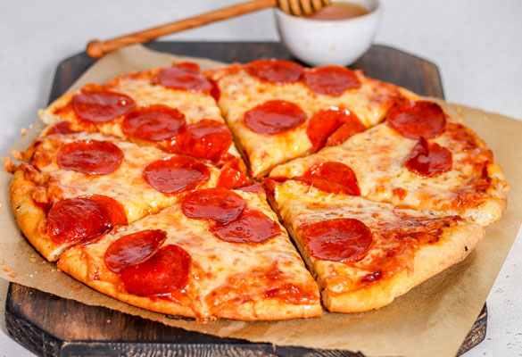

Pepperoni Pizza

Description
Pepperoni pizza is a classic favorite featuring a crispy, chewy crust topped with tangy tomato sauce, gooey melted cheese, and a generous layer of spicy, savory pepperoni slices.
Ingredients
- 1 pizza dough (store-bought or homemade)
- 1/2 cup tomato sauce
- 1 1/2 cups shredded mozzarella cheese
- 1/2 cup sliced pepperoni
- 1 tbsp olive oil
- 1 tsp dried oregano
- 1/2 tsp garlic powder (optional)
- A pinch of red pepper flakes (optional for spice)
Steps
- Preheat your oven to 475°F (245°C).
- Roll out the pizza dough on a floured surface into your desired shape and thickness.
- Transfer the dough to a baking sheet or pizza stone.
- Spread a thin layer of tomato sauce evenly on the dough, leaving a small border around the edges.
- Sprinkle mozzarella cheese generously over the sauce.
- Arrange the pepperoni slices evenly on top of the cheese.
- Drizzle olive oil over the crust and sprinkle with dried oregano and garlic powder.
- Bake in the preheated oven for 10-12 minutes, or until the crust is golden and the cheese is bubbly.
- Remove from the oven, slice, and serve hot!
Home